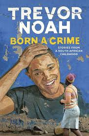

This book “Born a Crime is a book written by Trevor Noah who tells us his story of how he grew up in South Africa in the apartheid time.
The apartheid time was when the time government separated people by their race and made it illegal for all people of different races to
have relationships or have kids together. Trevor was born to a black mother and a white father and this made him a mixed person which
was illegal at that time.
The two chapters discuss the challenges that Trevor and his mom faced highlighting the government’s effort to separate the people of
different races and the effects on their lives. It also tells us how that even after the end of the apartheid era some issues were still
not resolved. This left so many people struggling. Trevor Noah’s story is filled with humor showing his struggles to adapt to different
levels of people, languages, and cultures
making him a strong and independent person.
Similar to South Africa, during the apartheid era, Kilifi County really struggled with fairness, equality, oppression, and unfairness.
The book “Born a Crime” is a strong reminder of the effects of division among people according to their race and the importance of having
moral values to bring to light justice and balance. By establishing connections between Noah’s story and experiences to challenges faced
by people in Kilifi County we may improve our understanding and recognition of racism, and the attempt to create a fairer society.